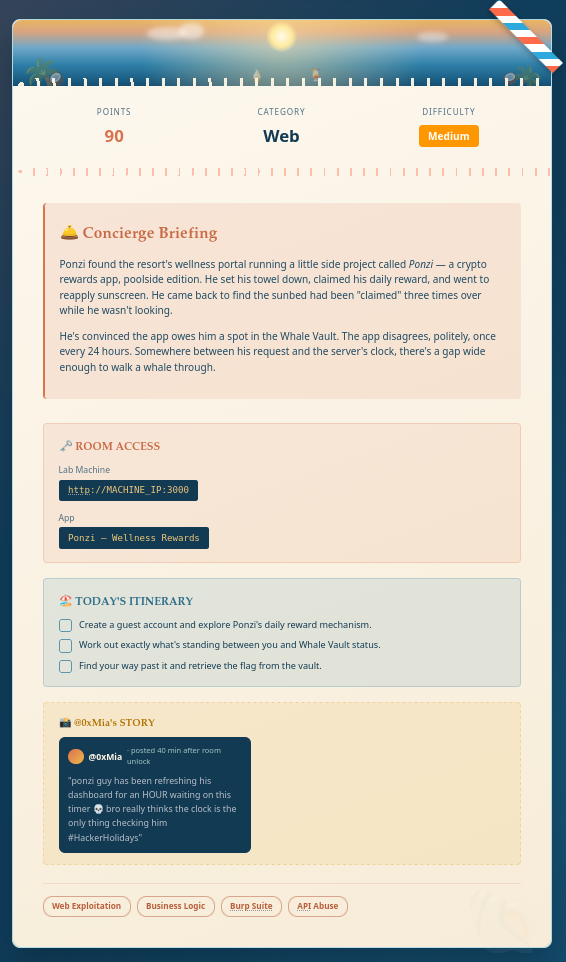
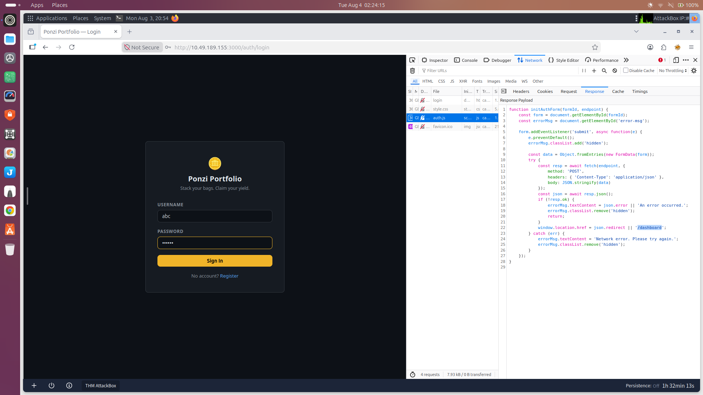
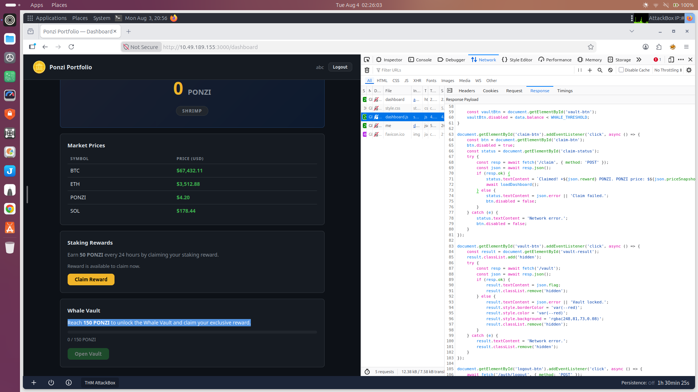
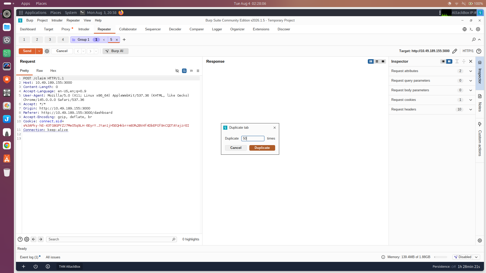
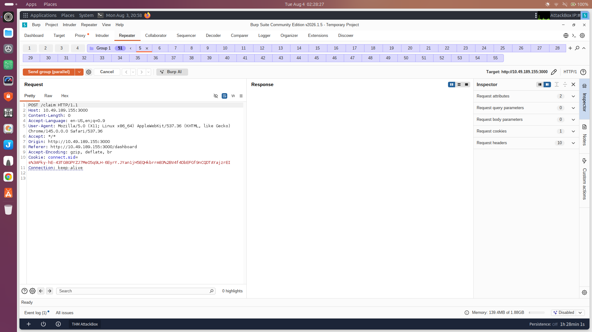
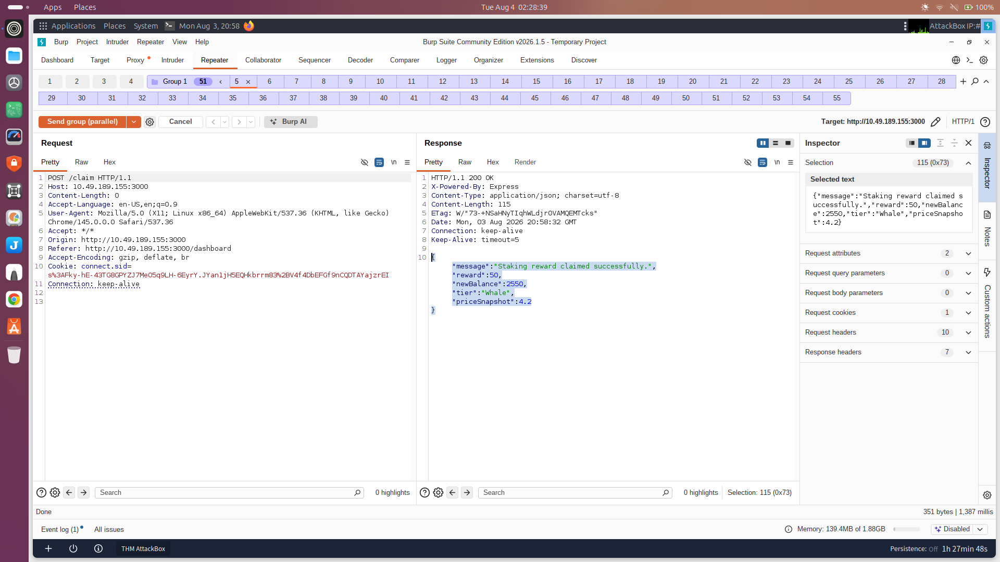
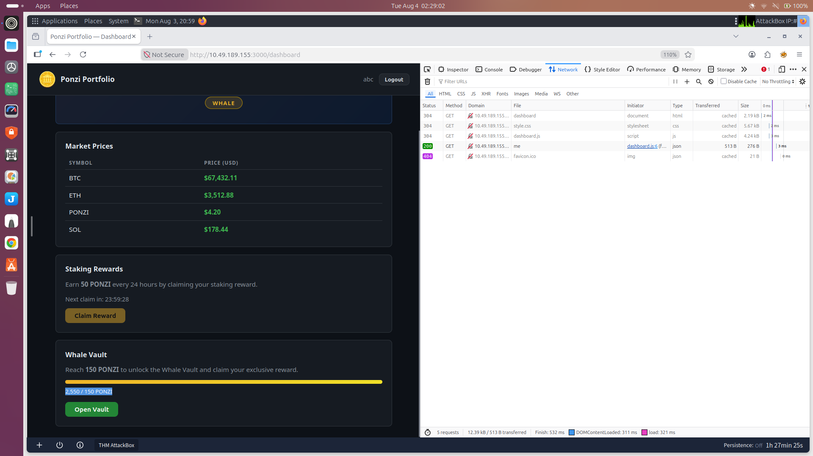
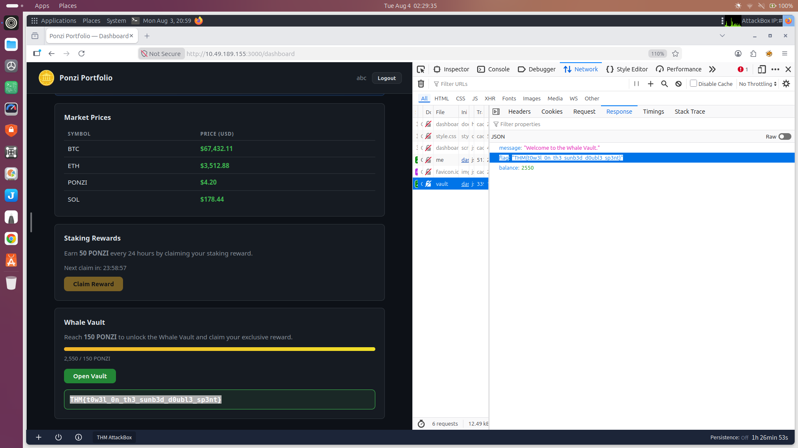
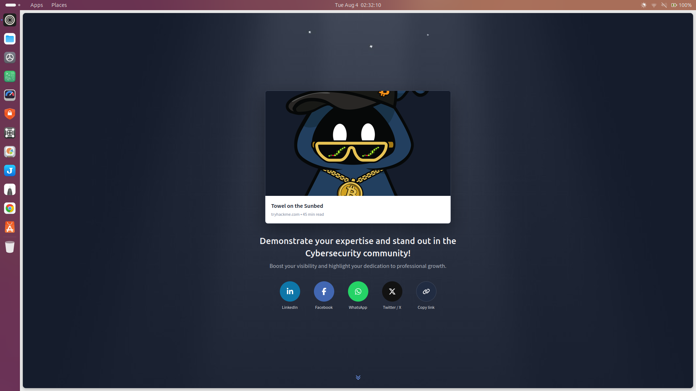

The objective of this room was to analyze the Ponzi Portfolio web application, identify the vulnerability preventing access to the Whale Vault, exploit the application's business logic to obtain more PONZI tokens than intended, and finally retrieve the flag from the Whale Vault.
Before interacting with the application, I carefully read the room description and the provided hint.
The concierge briefing stated:
"Somewhere between his request and the server's clock, there's a gap wide enough to walk a whale through."
This immediately suggested that the vulnerability was related to time or concurrent request processing rather than authentication or input validation. Such hints commonly indicate a Race Condition, where multiple requests are processed before the server updates its internal state.
Instead of attacking the application immediately, I first explored how it worked.
I created a new user account through the registration page and logged into the application.
After logging in, the dashboard displayed several sections:
The staking section explained that users could claim 50 PONZI every 24 hours.
The Whale Vault section stated that access required a balance of 150 PONZI.
From this, I understood the intended business logic:
Since waiting three days was clearly not the intended solution, I suspected there was a way to bypass this restriction.

Before testing the application further, I inspected the JavaScript loaded by the dashboard using the browser's Developer Tools.
The dashboard.js file contained several useful pieces of information.
One of the first observations was the constant defining the Whale Vault requirement:
const WHALE_THRESHOLD = 150;
const WHALE_THRESHOLD = 150;This confirmed that the application required 150 PONZI before enabling access to the vault.
Further down, I located the code responsible for handling the reward claim.
document.getElementById('claim-btn').addEventListener('click', async () => {
const btn = document.getElementById('claim-btn');
btn.disabled = true;
const resp = await fetch('/claim', {
method: 'POST'
});
});document.getElementById('claim-btn').addEventListener('click', async () => {
const btn = document.getElementById('claim-btn');
btn.disabled = true;
const resp = await fetch('/claim', {
method: 'POST'
});
});From this code I learned several important things.
/claim endpoint.Although disabling the button prevents users from clicking it multiple times through the browser interface, this is only a client-side restriction.
Client-side controls can always be bypassed by sending HTTP requests manually using tools such as Burp Suite.
At this point, /claim became the most interesting endpoint to investigate.

After reviewing both the room hint and the JavaScript logic, I formed the following hypothesis.
The application likely performs a server-side check to determine whether the reward has already been claimed.
If several requests arrive before the server updates the user's claim status, every request may observe the reward as still available.
As a result, the application could potentially issue multiple rewards for what should be a single claim.
This behaviour is characteristic of a Race Condition.
To verify this hypothesis, I decided to intercept the reward request
I enabled Burp Suite Proxy and clicked the Claim Reward button.
Burp intercepted the request before it reached the server.
The request was very simple:
POST /claim HTTP/1.1 Host: 10.49.189.155:3000 Cookie: connect.sid=...
POST /claim HTTP/1.1
Host: 10.49.189.155:3000
Cookie: connect.sid=...One important observation was that the request contained:
The server only required a valid authenticated session (connect.sid) to process the reward request.
This indicated that the reward mechanism relied entirely on server-side business logic rather than any unique value supplied by the client.
Because every request was identical, I suspected that sending many copies simultaneously might allow multiple rewards to be processed before the server updated the claim status.
This observation strengthened my suspicion that the vulnerability was a Race Condition.
I forwarded the request to Burp Repeater for further testing.
Inside Burp Repeater, I duplicated the intercepted request.
Using the Duplicate Tab feature, I created 50 identical requests.
Sending these requests one after another would not trigger a race condition because the server would complete processing each request before receiving the next one.
Instead, all requests needed to reach the server at nearly the same time.

Burp Repeater provides a feature called Send Group (Parallel).
This feature transmits every selected request simultaneously rather than sequentially.
I selected all duplicated requests and executed:
Send Group (Parallel)
Send Group (Parallel)Burp immediately transmitted all 50 requests to the /claim endpoint.

Many of the responses returned:
{
"message":"Staking reward claimed successfully.",
"reward":50,
"newBalance":2550
}{
"message":"Staking reward claimed successfully.",
"reward":50,
"newBalance":2550
}Under normal circumstances, only one request should have succeeded while all remaining requests should have been rejected.
Instead, numerous requests successfully awarded 50 PONZI each.
This demonstrated that multiple requests were processed before the server updated the claim status.
The backend failed to correctly synchronize concurrent requests.

After refreshing the dashboard, my account balance had increased dramatically.
Instead of the expected:
50 PONZI
50 PONZImy account now contained:
2550 PONZI
2550 PONZIThe account tier also changed to Whale, and the progress bar significantly exceeded the required threshold of 150 PONZI.
This confirmed that the business logic restriction had been successfully bypassed.

Since my balance now exceeded the required threshold, I clicked Open Vault.
The request completed successfully.
The application returned:
{
"message":"Welcome to the Whale Vault!",
"flag":"THM{...}"
}{
"message":"Welcome to the Whale Vault!",
"flag":"THM{...}"
}The flag was successfully retrieved, completing the room.


Race Condition
More specifically:
Business Logic Race Condition (also known as a Limit Overrun Race Condition).
The application likely performs operations in the following order:
Receive reward request ↓ Check whether reward has already been claimed ↓ Grant 50 PONZI ↓ Update database ↓ Mark reward as claimed
Receive reward request
↓
Check whether reward has already been claimed
↓
Grant 50 PONZI
↓
Update database
↓
Mark reward as claimedThis sequence works correctly only when requests are processed one at a time.
When many requests arrive simultaneously, the execution changes.
Request A → Reward available Request B → Reward available Request C → Reward available ↓ All requests grant rewards ↓ Database updated afterwards
Request A → Reward available
Request B → Reward available
Request C → Reward available
↓
All requests grant rewards
↓
Database updated afterwardsSince every request checks the reward status before any request updates it, all requests believe the reward is still available.
Consequently, multiple rewards are issued instead of just one.
The developers attempted to prevent repeated claims by disabling the reward button.
btn.disabled = true;
btn.disabled = true;However, this protection exists only within the browser.
Once the HTTP request is intercepted, the attacker is no longer constrained by the user interface.
Using Burp Suite, I was able to send dozens of identical requests directly to the server, completely bypassing the disabled button.
This demonstrates an important security principle:
Client-side controls improve user experience but cannot enforce security. All security decisions must be implemented and validated on the server.
If this vulnerability existed in a real-world application, an attacker could:
To prevent this vulnerability, the server should ensure that reward processing is atomic, meaning only one request can succeed at a time.
Possible mitigations include:
During this room, I demonstrated practical experience in:
This room demonstrated how business logic vulnerabilities can arise when a server fails to safely process concurrent requests. Although the application attempted to prevent multiple reward claims by disabling the claim button in the browser, this client-side restriction offered no real security. By analyzing the JavaScript, identifying the /claim endpoint, intercepting the request, and sending multiple identical requests in parallel with Burp Suite, I successfully exploited a Race Condition to obtain far more PONZI tokens than intended. This allowed me to exceed the Whale Vault threshold and retrieve the flag without waiting for the legitimate 24-hour claim intervals. The room reinforces a fundamental principle of web security: security controls must always be enforced on the server, and business-critical operations must be designed to handle concurrent requests safely.